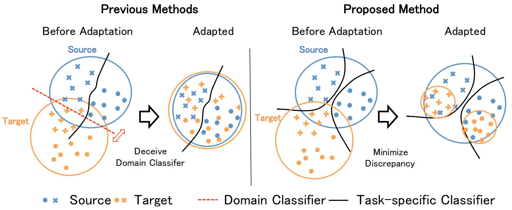
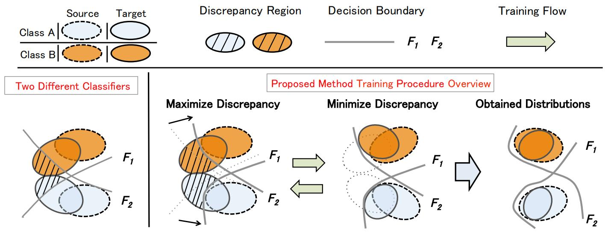
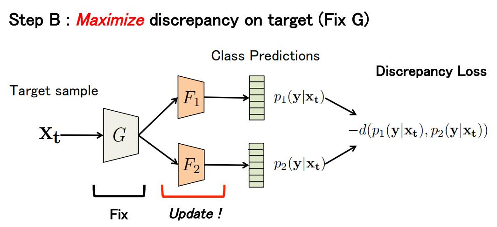
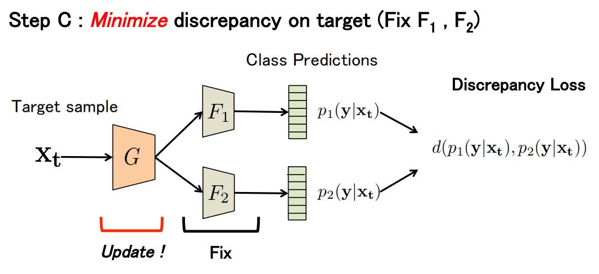

域适应分类：MCD¶
会议时间：IEEE Conference on Computer Vision and Pattern Recognition 2018 (CVPR 2018)
源码地址：https://github.com/mil-tokyo/MCD_DA
针对领域：域适应分类
主要思想¶
现有的域适应方法大多数都是在不考虑样本类别的情况下对源域特征和目标域特征执行对齐，以对抗的方式训练特征提取器和分类器，最终让特征提取器匹配源域样本和目标域样本之间的特征。然而，这种方法由于在特征对齐的过程中不考虑目标样本和模型决策边界之间的关系，因此会损害模型对辨识力特征(discriminative features)的提取，如下图左侧所示，为了让两个领域的特征分布尽可能相似，特征提取器会在决策边界附近生成模糊的特征（本文算法最终要解决的问题），对此，作者使用目标域样本分类器的输出来对齐源域和目标域的特征分布。

该方法主要由两个模块构成：两个特定于任务(task-specific)的分类器和特征提取器。特定于任务的分类器表示为由任务驱动的分类器（如图像分类中的全连接层，输出每个类别的预测分数）。训练阶段，两个分类器同时以特征提取器提取到的特征作为输入，对于源域样本，期望输出正确的类别概率预测（直接利用交叉熵损失实现）；而对于目标域数据，期望模型可以检测（识别）远离源域支持(support)的目标样本，所谓的远离源域支持其实就是数据分布离源域数据分布远的样本（如上图中，离蓝色点较远的部分橙色点）。由于对于远离源域的样本，特征提取器往往不能提取出具有辨识力的特征，因此模型不能清楚地将这些样本分类到某些特定的类别，从而导致误分类。对此，作者使用特定于任务的分类器作为判别器，由于该分类器直接与最终的图像分类挂钩，而正确执行图像分类就必须挖掘图像中与类别相关的辨识力特征，因此相比于传统使用域分类器来对齐领域特征分布的方法，作者使用的样本分类器更能兼顾类别信息；而特征提取器的训练则与分类器相反，用于混淆判别器的判断（这里类似于利用域判别器对齐特征中的对抗损失）。换句话说，在考虑分类器对目标样本类别概率的输出时，让特征提取器在源域支持附近生成目标域数据的特征（即使目标域数据靠近源域数据）。由于该方法考虑了目标域样本和决策边界之间的关系，因此它允许特征提取器为目标域样本生成辨识力特征。注意：该方法以对抗的方式执行训练过程，并且与利用域分类器来对齐特征分布的方法类似，只是这里使用任务相关的分类器来对特征执行对齐（引入了类别信息）。
方法¶
总体思路¶
假设源域数据集为\{X_s,Y_s\}，其中源域图像表示x_s\in X_s，对应的标签表示y_s\in Y_s，并且目标域数据为X_t，其中目标域图像表示为x_t\in X_t。以图像x_s以及x_t作为输入的特征提取网络表示为G，以特征图作为输入的分类网络表示为F_1和F_2，分类器F_1和F_2输出一个K维的向量，分别代表K个类别的预测分数，再将预测向量传入softmax函数得到每个类别的预测概率，假设p_1(y|x)和p_2(y|x)依次表示由F_1和F_2获得的K维预测概率（以x作为输入）。
模型总目标为通过利用特定于任务(task-specific)的分类器作为判别器来对齐源域和目标域的特征，以便于考虑类别边界和目标域样本之间的关系，对此，我们必须检测远离源域支持的目标域样本，即让模型可以识别到与源域数据分布差别大的目标样本，这些目标样本很容易被由源域样本训练的分类器错误分类。因此，为了检测这些目标域样本，作者提出利用两个分类器对目标样本预测的不一致性来检测与源域数据的差异。例如：如果对于一个目标域样本，模型提取到的特征与源域的特征分布距离越远，则此时两个分类器对该特征的分类预测越具有不确定性，分类结果差异就越大；反之，如果提取得到的特征与源域特征分布越近，则此时分类器对该特征的分类决策就越有把握（因为靠近源域，而对于源域特征，分类器是非常有把握做出判断的），两个分类器对该特征的分类预测结果差异就越小。
考虑到两个分类器(F_1,F_2)需要具有不同的特性（如下图最左侧所示，决策边界不能重合，需要有较大的相交角度，如果两个决策边界重合的话，就失去了设置两个分类器的意义了），因此F_1与F_2需要有不同的初始化参数（从一开始就具有差异），并且由于具有源域样本的标签，因此可以假设两个分类器能够正确地对源域样本进行分类。这里，有一个关键的直觉(intuition)，源域支持外的目标样本很可能被两个不同的分类器以不同的方式分开（即对于同一特征，不同的分类器做出不同的决策），如下图中最左侧黑线表示的区域(差异区域, Discrepancy Region)。相反，如果我们可以衡量两个分类器之间的差异性，并且训练特征提取器从而最小化不一致性，则网络会避免在源样本支持外的区域生成目标域特征。这里考虑使用公式d(p_1(y|x_t),p_2(y|x_t))来衡量目标样本的差异，其中d表示衡量两个概率之间散度的函数，后面的目的就是获得一个能够最小化目标样本差异的特征生成器（这里与利用域分类器对齐特征的目的类似）。

为了有效地检测远离源域支持的目标样本，作者提出通过最大化给定的目标域特征差异(Maximize Discrepancy)来训练分类器(F_1与F_2)，具体过程如上图所示，决策边界从虚线到实线的一个演变（第一张图），这里相当于让决策边界后退一步，向源域靠近，该操作可以避免两个分类器非常相似，并且可以检测源域支持外的目标域样本。之后，再通过最小化差异(Minimize Discrepancy)来训练特征提取器，具体过程如上图，虚线区域到实线区域的转换（第二张图），这里相当于让特征提取器产生的目标域特征前进一步，让特征分布也向源域靠近，该操作可以鼓励特征提取器将目标样本提取到的特征包含在源域特征支持内（即靠近源域特征），两者一结合，有点类似于对抗学习，可以达到”一退一进”的训练效果，最终可以让目标域的支持特征被源域样本的支持特征所包含（如上图中最终获得的数据分布与决策边界）。
注：
- 因为类别具有唯一性，面对一张目标域图像时，理想分类器的分类结果必然具有确定性（输出结果是唯一的），对应这里两个分类器分类结果一样，如果将一张目标域图像传入一个跨域识别能力比较差的模型中，则分类结果会有很大的不确定性，对应这里两个分类器分类结果不一。对此，如果想要使模型可以很好地识别目标域图片，则可以让模型的输出从不确定的转为确定的，因此我们最终所期望预设的两个分类器对于同一张目标域图片可以得到两个一致的分类结果，并且该结果均是正确的类别；
- 为了保证上述思路的可行性，必须要实现一个前提——决策边界不能重合，如果决策边界重合，则两个分类结果必然一致，这一思路就无法得到实现（很像对抗），因此，分类器和特征提取网络要以相反的方式去优化；
- 利用源域图像的分类损失优化模型的分类性能，同时利用源域和目标域的差异损失优化模型的跨域识别性能。理想的优化结果：两个分类模型会以不同角度得到相同的分类结果（也就是用不同的决策面决策），同时由于目标域的图像也参与了模型分类性能的训练，因此特征提取网络可以提取类别辨识度高的特征，进一步提升了模型的分类性能。
差异损失¶
本文中，作者在两个分类器的预测概率之间使用的差异损失可以表示为：
训练阶段¶
作者将训练过程划分成了三个阶段
第一阶段
首先，利用源域样本来同时训练分类器和特征提取器，保证它们可以对源域样本得到正确的分类，即可以提取判别特征，该阶段使用交叉熵损失来优化，优化目标可以表示为：
固定特征提取器G，通过最大化差异来训练分类器(F_1,F_2)，即将分类器视为特征提取器的判别器。通过增加分类器的差异可以使网络检测出被源域支持所排除的目标域样本，具体过程如下图所示：

在最终的优化目标中，增加了源域样本的分类损失（不添加该损失的话，模型的性能会显著下降），因此使用相同数量的源域样本和目标域样本来更新模型：
固定分类器，通过最小化差异来训练特征提取器，具体过程如下图所示：

这个操作会重复n遍（对应源码中做了一个for循环，重复n次前向传播和梯度更新），即超参数n用于权衡特征提取器和分类器的优化：
总结¶
本文提出了一种利用特定于任务的分类器来对齐特征分布的无监督领域自适应方法。将特定于任务的分类器视为判别器，尝试检测距离源域支持比较远的目标域样本，并且通过对抗损失让特征提取器在源域支持附近生成目标域特征，由于生成器使用来自分类器的反馈，因此它将避免在类边界附近生成目标域特征。
注：以上内容仅是笔者个人见解，若有错误，欢迎批评指正
最后一次修改日期：2022年2月26日